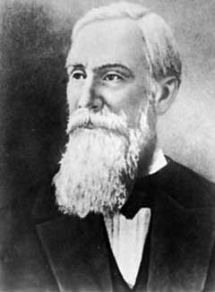

| Choisissez votre langue ! | Choose your language ! |
Le hasard
Voici un extrait de l'article de l'encyclopédie 'Wikipédia' consacré au hasard :Le hasard exprime un manque de cause à effet d'un événement. On parle de hasard :
- quand on se retrouve dans une situation imprévue (« On s'est rencontré par hasard »), Lorsqu'on décrira un événement grave non prévisible dans le temps uniquement, on parlera de fatalité (« Cela devait arriver un jour »)
- quand on ne sait pas ce qui va se passer (« C'est le hasard qui décidera ! »)
- quand on ne souhaite pas entrer dans le détail des causalités
Le hasard est exprimé différemment lorsqu'il consiste en une expérience spirituelle subjective. On parle alors de providence, de destin, de congruence, de synchronicité, de fatalité, etc.
De cela nous retiendrons qu'il y a une grande part de subjectivité dans la notion de hasard.
Le hasard ne serait en sorte qu'une mesure de notre ignorance.
Un phénomène 'aléatoire' est un phénomène lié au hasard, un processus dont l'issue est incertaine. Ce mot vient du latin 'alea' (les dés). On se souviendra du fameux "alea jacta est !" de Jules César franchissant le Rubicon.
En anglais le mot hasard est rendu par 'chance' (qui n'a donc pas la connotation positive du français), quand a l'adjectif 'aléatoire' il est le plus souvent rendu par 'random'.
Pour illustrer notre propos voici une petite appliquette qui génère une suite d'entiers.
La suite commence avec l'entier 1.
En appuyant sur le bouton 'suivant' on génère un nouvel entier.
Quelqu'un qui observe le phénomène sans avoir de connaissances particulières en informatique ou en mathématique, et ne trouvant pas de loi liant un entier au suivant en concluera qu'il s'agit d'une suite aléatoire.
Chance
Here is an excerpt from the (French)) 'Wikipedia' encyclopedia article on chance:Chance expresses a lack of cause and effect of an event. We are talking about chance:
- when we find ourselves in an unforeseen situation (“We met by chance”), When we describe a serious event that cannot be foreseen in time only, we will speak of fatality (“It had to happen one day”)
- when you don't know what's going to happen ("Chance will decide!")
- when you don't want to go into the details of the causalities
Chance is expressed differently when it consists of a subjective spiritual experience. We then speak of providence, destiny, congruence, synchronicity, fatality, etc.
From this we will retain that there is a great deal of subjectivity in the notion of chance.
Chance would only be a measure of our ignorance.
A 'random' phenomenon is a phenomenon linked to chance, a process whose outcome is uncertain. T
In English the French word 'hasard' is rendered by 'chance' (which therefore does not have the positive connotation as in French), when the adjective 'aleatoire' (from Latin 'alea' = dice) is most often rendered by 'random'.
To illustrate our point here is a small applet which generates a sequence of integers.
The sequence begins with the integer 1.
Pressing the 'Next' button generates a new integer.
Someone who observes the phenomenon without having any particular knowledge of computer science or mathematics, and not finding a law linking an integer to the next one, will conclude that it is a random sequence.
En fait, en lisant le petit programme qui suit et qui génère la même suite on s'aperçoit qu'il s'agit d'une suite récurrente simple et même très simple il s'agit d'une loi linéaire combinée avec une congruence.
Cette suite, comme beaucoup d'autres, a été imaginée par le mathématicien américain Derrick Henry LEHMER (1905-1991) pour simuler l'apparition de nombres aléatoires.
Cette suite, comme beaucoup d'autres, a été imaginée par le mathématicien américain Derrick Henry LEHMER (1905-1991) pour simuler l'apparition de nombres aléatoires.
In fact, by reading the small program which follows and which generates the same sequence, we realize that it is a simple and even very simple recurrent sequence, it is a linear law combined with a congruence.
This sequence, like many others, was imagined by the American mathematician Derrick Henry LEHMER (1905-1991) to simulate the appearance of random numbers.
This sequence, like many others, was imagined by the American mathematician Derrick Henry LEHMER (1905-1991) to simulate the appearance of random numbers.
résultat de l'exécution :
result of running :
1 16807 282475249 1622650073 984943658 1144108930 470211272 101027544 1457850878 1458777923 2007237709 823564440 1115438165 1784484492 74243042 114807987 1137522503 1441282327 16531729 823378840
Historique
Les précurseurs
L'essor de la théorie des probabilités date du milieu du 17° siècle. Un écrivain et joueur impénitent, Antoine Gombaud, plus connu sous le nom de 'Chevalier de Méré' posa à Blaise Pascal un problème qui le préoccupait :Déterminer les chances de vaincre de chacun de deux adversaires sachant qu'à un certain stade du jeu le premier a gagné n < m parties, le second p < m parties et que le premier qui gagne m parties emporte toute la mise.
Pascal communiqua sa solution à Pierre de Fermat qui en avait lui-même élaboré une.
Sur ce problème s'est également penché Christian Huygens.
History
Precursors
The rise of probability theory dates from the middle of the 17th century. An unrepentant writer and gamer, Antoine Gombaud, better known as 'Chevalier de Méré', posed a problem to Blaise Pascal that bothered him:Determine the chances of winning for each of two opponents knowing that at a certain stage of the game the first has won n < m parts, the second p < m games and the first to win m games wins the entire bet.
Pascal communicated his solution to Pierre de Fermat who had developed one himself.
This problem has also been studied by Christian Huygens.
| Antoine Gombaud (1607-1684/FR) | Blaise Pascal (1623-1662/FR) | Pierre de Fermat (1601-1665/FR) | Kristiaan Huygens (1629-1695/NL) |
Les développeurs célèbres de la théorie
Les mathématiciens comprirent vite l'intérêt de ce genre de question pour l'étude des lois régissant les phénomènes aléatoires.C'est donc à partir des problèmes des jeux de hasard que se développèrent les premiers concepts et les premières approches de cette nouvelle science.
PLus tard, au 19° siècle, le développement rapide des sciences rendit nécessaire l'extension de la théorie des probabilités au delà des jeux de hasard.
Famous developers of the theory
Mathematicians quickly understood the interest of this kind of question for the study of the laws governing random phenomena.It is therefore from the problems of games of chance that the first concepts and the first approaches to this type of new science.
Later, in the 19th century, the rapid development of science made it necessary to extend the theory of probability beyond games of chance.
| Jacob Bernouilli (1654-1705/CH) | Abraham de Moivre (1667-1754/FR) | Pierre-Simon de Laplace (1749-1827/FR) | Carl-Friedrich Gauss (1777-1855/DE) | Siméon-Denis Poisson ((1781-1840/FR) |
L'école russe
A l'époque moderne, la théorie des probabilités devint vite une spécialité russe.Son développement et son axiomatisation furent rendus possibles par les découvertes récentes en théorie des ensembles, en théorie de la mesure et en analyse fonctionnelle.
Actuellement la théorie des probabilités apparait comme une application de la théorie générale du calcul intégral. Elle est très proche d'autres branches des mathématiques et très utile pour la technologie, l'économie, la finance, la biologie.
The Russian School
In modern times, probability theory quickly became a Russian specialty.Its development and axiomatization were made possible by recent discoveries in set theory, measure theory and functional analysis.
Currently probability theory appears as an application of the general theory of integral calculus. It is very close to other branches of mathematics and very useful for technology, economics, finance, biology.
|
Pafnuti Lvovich Tchebichev (1821-1894/RU) |
Alexandre Liapounov (1857-1918/RU) |
Andrei Andreevich Markov (1856-1922/RU) |
|  |

|
|
|
Serguei N. Bernstein (1880-1969/URSS) |
Alexander Yakovlevich Khinchin (1894-1959/URSS) |
Andrei Nicolaevich Kolmogorov (1903-1987/URSS) |

|
|
Création Gilles Dubois - licence CC-BY-SA
Created by Gilles Dubois - licence CC-BY-SA
|
Septembre 2023
September 2023
|
Version mobile Jquery
Mobile Jquery version
|